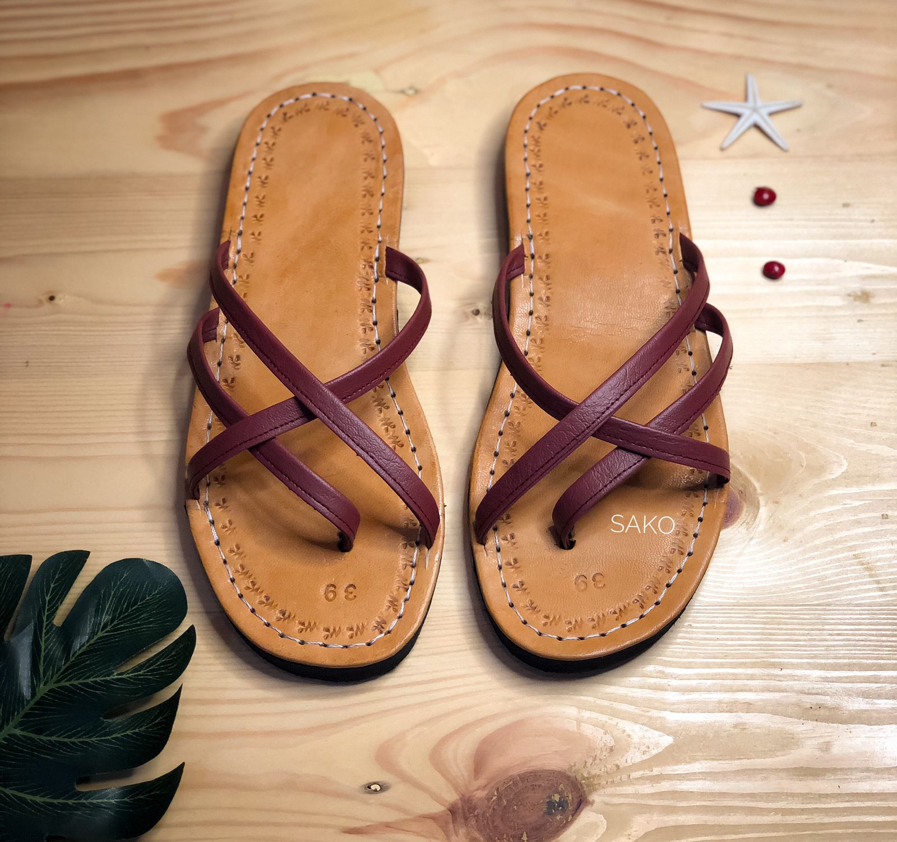

Silang satu dua coklat
Sandal Silang Satu Dua Coklat adalah paduan elegan antara keindahan tradisional Bali dan kenyamanan modern. Dibuat dengan teliti oleh pengrajin berbakat, sandal ini menampilkan desain silang yang khas dari Bali, memberikan sentuhan eksotis pada langkah Anda sehari-hari. Bahan berkualitas tinggi dipilih dengan cermat untuk memastikan kenyamanan maksimal dan daya tahan yang luar biasa. Sol yang kokoh namun ringan memberikan stabilitas yang dibutuhkan, sementara tali silang yang lembut namun kuat memeluk kaki dengan nyaman.
